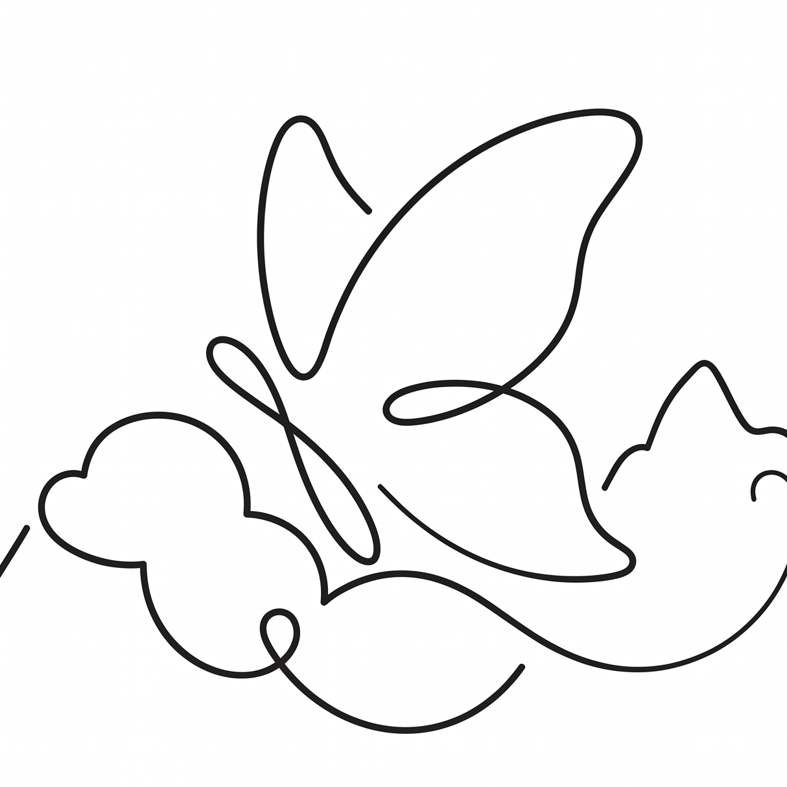

libhangul 계열 한글 입력기(IME) — 세벌식·신세벌·두벌식 갈마들이·모아치기 등 다양한 자판을 지원합니다. (현재는 Windows 만 지원)
① 본체(먼저 설치) — 두벌식·세벌식 314·세벌식 최종 순아래(구름) 등 기본 자판 + 안마태· 신세벌·참신세벌 등 확장 세벌식 17종 + 한자 변환.
본체 설치 파일 받기NabiCloud-v*.exe · GitHub Releases② 애드온(선택, 본체 설치 후) — 세벌식 3-18Na·4z·세모이 (모아치기 e)·두겹이/두줄이(두벌식 모아치기).
애드온 설치 파일 받기NabiCloud-Addon-v*.exe · GitHub Releases제거는 Windows 설정 → 앱 → 설치된 앱에서 "나비구름"(또는 "나비구름 추가 자판 확장팩") 제거.
이 인스톨러는 아직 코드 서명이 없어 Windows 11 에서 "알 수 없는 게시자" / "Windows의 PC 보호" 경고(SmartScreen)가 뜰 수 있습니다. 개인 제작 배포라 그렇습니다 — 아래 중 하나로 진행하세요:
.exe 우클릭 → 속성 → 하단 차단 해제 체크 → 확인 후 실행.Unblock-File .\NabiCloud-v2.4.1.1.exe내려받은 파일이 원본과 같은지 SHA-256 으로 확인할 수 있습니다 — 각 버전의 해시는
릴리스 노트에
함께 게시됩니다(PowerShell Get-FileHash 파일명 결과와 대조).
libhangul.dll(LGPL-2.1) — 공개 소스:
nabicloud-engine.각 구성요소의 상세 고지는 설치 폴더의 NOTICE.md·licenses\에 동봉됩니다.